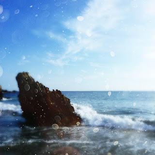

Recovered weblog entry
The magical world of non-destructive edits
iPhone 6 Plus ~ 4.15mm ~ ƒ/2.2Lately, it's been tricky finding time to shoot. Generally speaking, inspiration hasn't been the dilemma; in fact, I am quite grateful that the urge to take a picture materializes more often than not. It's a feeling I've missed, part and parcel with the writings that used to be common fare on this site. Time and energy it is that stops me nowadays.
So I decided to take a quick journey on my iPhone today, utilizing the [Search] function built into the Photos app. (Side note: Try it. Seriously. Search for anything; flowers, mountains, a person, a color, etc. My library is over 27,000 pictures strong. What I find with search is staggering)
Anyway, back to what I was doing. A quick search popped up this glorious shot of a jutted rock in Newport, CA. But sadly, it didn't look like this first image with rocky details and creamy morning sand.

Shot w/Hipstamatic ~ badlyInstead, it looked like this. It was a hastily snapped picture, taken with my favorite app, Hipstamatic. And thanks to the magic of non-destructive edits, I was able to turn back the hands of time by six years and uncover the virgin, unedited picture with a few taps of my finger.
Hipstamatic doesn't always do what I wish it would. But that's part of the appeal, in a way. Harkening back to the days of disposable point and shoots, when one would never know what result would come until the day of development, Hipstamatic brings a little bit of risk back into digital photography.
But I digress; such is no longer the case. I remember reading years ago when the developers added non-destructive edits, but I believe I only scoffed when I saw that news. I probably figured it would tarnish what I believed to be a perfect app.
But I've grown up a bit, and today's photo brings me a bit of excitement. Because buried within the 27,000+ photos in my library is the possibility of a few more gems worth re-editing. And that will tide me over quite well until I can get back out on the road and capture a few new shots.